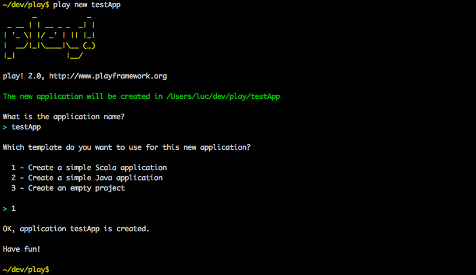
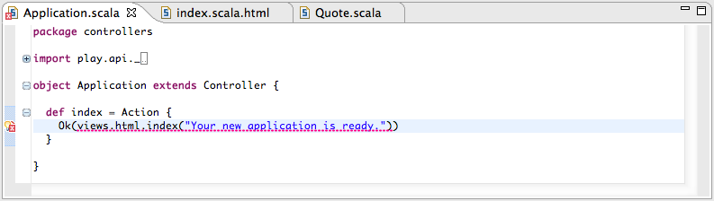

Setup and use Play framework 2.0 in Scala IDE 2.0

What is in this guide?
This guide will show you how to configure a Play web application to import it in Scala IDE, how to configure Scala IDE to work fine with the Play framework and finally how to develop Play web application from inside Scala IDE.
Prerequisites
Eclipse 3.6.2 (Helios) with Scala IDE for Scala 2.9 installed (update site: http://download.scala-ide.org/releases-29/stable/site).
Check the getting started page for instructions on how to install Scala IDE.
A basic knowledge of the Eclipse user interface is required.
No knowledge of the Scala language is required (in this guide).
No knowledge of the Play framework is required (in this guide).
Setting up Play 2.0
To be able to create a Play web application, the Play framework need to be installed. If you have not installed it already, follow this few steps, or use the Play documentation.
Download Play framework 2.0 from http://www.playframework.org/.
Unzip it in your preferred location. Let’s say /path/to/play20 for the purpose of this document.
For convenience, add the Play folder to your system PATH:
export PATH=$PATH:/path/to/play20
Creating a Play 2.0 application
In your development folder, ask Play to create a new web application, as a simple Scala application.
Go into the application folder.

And launch Play.

In Play, launch your newly created web application.

Check that the application works: http://localhost:9000/.

Configuring the Play 2.0 web application for Scala IDE
Now that the Play application is running, it needs to be configured so it can be imported into Scala IDE.
Play 2.0-RC1 integrates sbteclipse, which allow to create configuration files of a project for Eclipse.
First, exit the ‘run’ mode in Play using ctrl-d.

eclipsify is the command to invoke sbteclipse in Play.

Relaunch the web application, in ‘auto-reloading’ mode, using ~ run, so it is running in the background.

Configuring Scala IDE for the Play 2.0 web application
Setting a few preferences in Eclipse will make everything easier to use.
Open the internal web browser view in Eclipse, and check you can access your web application.

Configure Eclipse so changes on the file system are automatically picked up.

If you don’t have the Web Development Tools for Eclipse installed, Eclipse opens .html files in a web browser. Configure it to use the Scala Editor instead.

Importing the Play web application into Scala IDE
Everything is setup, it is time to import the project in the IDE.
Import the Play 2.0 application as an Existing Projects into Workspace.

The configuration generated by sbteclipse is working fine in Eclipse, but it is not optimal when using with Scala IDE.
Add the target/src_managed/scala folder as a source folder.

And remove the classes_managed folder for the build path.

Everything is good, everything compiles.

Doing some development
Now that everything is setup, we can start to do some real work.
Let’s change the main page to display a quote instead of the default page.
First, create the models.Quote class using the new Scala Class wizard.
Add variables to models.Quote, and make it a case class.
package models case class Quote(val text: String, val author: String) { }
Add an extra parameter to the index.scala.html view and update the layout.
@(message: String, quote: models.Quote) @main("Welcome to Play 2.0") { <p>@quote.text<em> - @quote.author</em></p> }
The templates are transformed into Scala code by the Play framework. As Play has been started in auto-reloading mode in the background, templates are recompiled as soon as the file is saved.
After saving the file, the changes are picked up by Scala IDE, and it reports an error in the code of Application.scala. The application is not using the template correctly.
Fix the application code, using a smart quote. And fix the imports as needed.
def index = Action { Ok(views.html.index("Your new application is ready.", Quote("Citer les pensees des autres, c'est regretter de ne pas les avoir trouvees soi-meme.", "Sacha Guitry"))) }
The code compiles. Check the result in the internal web browser.

Going further
You now have all you need to create great web applications with Play 2.0 and Scala.
For more information about Play 2.0, check out the embedded documentation.
For more information about Scala, go to the documentation website or get the downloadable eBook.
Feedback
This guide is managed through in the Scala IDE documentation project on github. Please use github tickets and pull requests system for feedback.
Luc Bourlier - +Luc Bourlier @sky1uc


{kind=link}
{kind=link}
{kind=link}